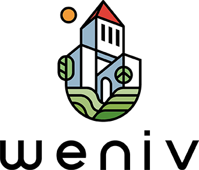

위니브
" 기술의 교육 기회를 누구나 차등없이 받을 수 있게 대중화, 보편화, 시스템화 하는 것 "
우리는 교육 특권의 대중화, 고급 IT 기술의 상용화를 도모합니다. 또한 지역적 특성을 극복하고 ICT 지식에 대한 갈급함을 해소할 수 있도록 노력하고 있는 ICT 연구 및 (코딩)교육 기관이며 다양한 사회 공헌 활동을 하고 있습니다.
바울랩은 제주도에 위치한 ICT 연구 및 (코딩)교육 기관으로 연구원, 학원, 출판사를 함께 운영하고 있습니다. 진취적인 청년들이 경제적으로도 여유를 가지며 하고 싶은 연구를 할 수 있는 '연구의 場', 연구의 경험과 결과를 열정과 책임으로 교육하는 '교육의 場', 이로 인한 이익과 지식을 사회를 위하여 나누는 '나눔의 場'으로 회사와 학생, 사회의 상생을 도모합니다.
위니브는 "기술의 교육 기회를 누구나 차등 없이 받을 수 있게 대중화, 보편화, 시스템화 하는 것"에 설립 취지를 가지고 있습니다. 지역 기반 ICT 대안 교육 플랫폼, 유료와 무료 ICT 영상 콘텐츠를 제작하며, 지역 교육 기회의 불평등, 접근성의 한계 등 기존 교육의 한계를 극복하기 위한 다양한 시도를 하고 있습니다. 또한 지역 혁신을 위한 사회 공헌 활동을 지속적으로 진행 중에 있으며 대표적으로 "선선하다 프로젝트", "We 드림(We Dream)" 프로젝트를 제주에서 진행 중에 있습 니다. 선선하다 프로젝트는 각 학교 ICT 분야를 선도하고 있는 학생을 초청하여 무료로 ICT 교육, 교재 지원, 동영상 강의 지원을 통해, 학생이 학생을 가르치도록 독려하는 비영리 프로젝트이며 We드림은 가정 형편이 어려우신 분들을 위해 매년 100명을 선발하여 온라인 강좌를 제공하는 프로젝트입니다.
제주코딩베이스캠프는 제주에서 가장 큰 ICT 교육 행사로 카카오, 구름, 제주산학 융합원 등 기업 및 지자체와 함께 진행하고 있습니다. 13기까지 진행된 이 행사는 경쟁률 10:1에 약 400여 명이 참여하였고 도내뿐만 아니라 도외에서도 주목받고 있는 무료 캠프입니다. 또한 인프런, Edwith, 구름, 유튜브, 에듀캐스트 등의 교육 플랫폼에서 35개의 동영상 강좌를 제공하고 있으며 21년 2월 총 30,000명 이상의 수강생이 제주코딩베이스캠프의 강좌를 수강하고 있습니다. 수료증 제도를 통한 나노디그리 시스템이 도입되어 있고, 수료를 한 학생에게는 취업 매칭, 콘텐츠 공동제작의 기회를 제공하고 있습니다.
커리큘럼 보러가기!